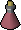

In this release
You can now check on your bot from your phone. The Microbot dashboard shows each linked client's hitpoints, inventory and skills, and takes a screenshot of the game on request. Bot alerts can now tell you when your character dies, looks stuck, drops to low hitpoints or gets banned. This release also fixes two slowdowns from 2.6.38, and the client stops using more memory every time you start and stop a plugin. It ships Microbot client 2.6.39 (on RuneLite 1.13.3) together with fixes to four Hub plugins.
See your bot from the dashboard
Say you leave a script running while you go out, and you'd like to know it's still doing its job. Open dashboard.microbot.cloud on your phone and tap your client. You see its hitpoints, prayer, run energy and special attack, its world, combat level and location, whether it's busy or idle, the scripts it's running, all 28 inventory slots, every skill level, and the XP it gained this session.
If you'd rather see for yourself, press Take screenshot. The client takes a picture of the game a second or two later, and you can download it. The screenshot shows the game window only. If you don't want the dashboard to take screenshots, untick Allow dashboard screenshots under General in the Microbot settings, and the button greys out.
The new Progress page adds up time in game and XP per skill over the last 30 days, for all your clients or just one. It updates every 2 minutes.
All of this only works for a client linked to your Microbot account. To link one, click Link to Microbot account under Microbot Cloud in the client. Your character name is never sent.
New bot alerts
On the Bot Alerts page there are four new alerts. Each one is sent to your Discord webhook or email.
- My character dies. Sent while a script is running, so you can go and get your items back.
- My bot looks stuck. No XP, no movement and no inventory change for the number of minutes you pick, from 5 to 120. Planned breaks don't count.
- My hitpoints get low. Sent once each time your hitpoints drop below the percentage you pick, for example 25%.
 My account gets banned. Sent when the login screen says your account has been disabled. If you run two accounts on the same client, you get an alert for each one.
My account gets banned. Sent when the login screen says your account has been disabled. If you run two accounts on the same client, you get an alert for each one.
These alerts need client 2.6.39. A client on an older version keeps sending the alerts it already had.
Two 2.6.38 slowdowns fixed
Some plugins got slower in 2.6.38. Going back to 2.6.36 fixed it, and with this release you no longer need to.
Withdrawing with Withdraw-X. Plugins that took out a custom amount from the bank and then waited for the items to show up in the inventory waited the full timeout, usually 5 seconds, every time. The items had already arrived before the plugin started waiting. Now the plugin moves on as soon as they arrive.
Running when a plugin asks for it. Many plugins turn off "Enable auto run" when they start, and then turn run on themselves when they need it. A blast furnace plugin does this on every trip to the conveyor belt. Since 2.6.38 that request did nothing, so the character walked the whole way and every trip took longer. Now a plugin can turn run on again. The walker itself still leaves run off while "Enable auto run" is unticked, as in 2.6.38.

Auto run is off and the plugin asks for run: your character walks, and every trip takes longer.
Auto run is off and the plugin asks for run: your character runs, as it did in 2.6.36.
Less memory for long sessions
Each time a plugin started, its script set up to 10 background threads, and they stayed in memory after you stopped the plugin. Say you turn Fletching on and off 30 times over an evening: 300 threads stay in memory. Updating or removing a plugin from the Hub also left its old copy in memory. Now a script releases its threads one minute after it goes idle, so the client stays as light at the end of a long session as it was at the start.
Plugin updates
Four Hub plugins kept their own background threads in memory in the same way. They now release them too.
Each start used to set up 10 threads that stayed after you stopped the plugin. It now uses one thread and releases it when you stop the plugin.
Releases its thread one minute after you stop it. Making tablets works as before.
Releases its threads one minute after it goes idle, and starts them again on your next clue.
If you turned Leagues Toolkit off and on again, the Hespori prayer switching and Demonic Gorilla Prayer didn't come back until you restarted the client. Now they start again with the plugin. The Hespori helper also releases its thread when you stop the plugin.
How to update
Restart Microbot to get client 2.6.39. Plugin updates show up in the Microbot Hub panel inside the client. To use the dashboard features, link the client to your Microbot account and open dashboard.microbot.cloud. Something not working? Tell us on Discord.
Game images © Jagex Ltd., via the Old School RuneScape Wiki.